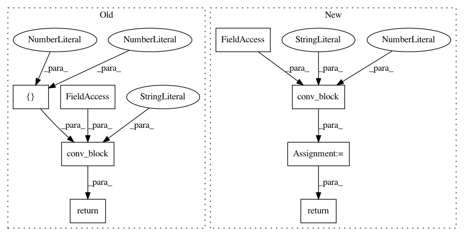

1973269eb8554237642cc5912f61269ae8f1ae1d,dataset/models/tf/linknet.py,LinkNet,decoder_block,#Any#Any#Any#Any#,106
Before Change
tf.Tensor
num_filters = inputs.get_shape()[-1].value // 4
return conv_block(inputs, "cna tna cna", [num_filters, num_filters, filters], [1, 3, 1],
name=name, strides=[1, 2, 1], **kwargs)
@classmethod
def head(cls, inputs, targets, num_classes, name="head", **kwargs):
3x3 transposed convolution, 3x3 convolution and 2x2 transposed convolution
After Change
with tf.variable_scope(name):
x = conv_block(inputs, "cna", num_filters, kernel_size=1, name="conv_pre", **kwargs)
x = cls.upsample(x, filters=num_filters, name="upsample", **upsample_args)
x = conv_block(x, "cna", filters, kernel_size=1, name="conv_post", **kwargs)
return x
@classmethod
def head(cls, inputs, targets, num_classes, name="head", **kwargs):
3x3 transposed convolution, 3x3 convolution and 2x2 transposed convolution
In pattern: SUPERPATTERN
Frequency: 3
Non-data size: 8
Instances
Project Name: analysiscenter/batchflow
Commit Name: 1973269eb8554237642cc5912f61269ae8f1ae1d
Time: 2017-12-11
Author: rhudor@gmail.com
File Name: dataset/models/tf/linknet.py
Class Name: LinkNet
Method Name: decoder_block
Project Name: analysiscenter/batchflow
Commit Name: 1d7b7345ab3254ed9b450dbd4208a3d63cb4963f
Time: 2017-11-09
Author: a.kozhevin@analysiscenter.ru
File Name: dataset/models/tf/linknet.py
Class Name: LinkNet
Method Name: upsampling_block
Project Name: analysiscenter/batchflow
Commit Name: 4e9df7b36ab569d4aed0e87711755e9a3dc70b10
Time: 2017-11-12
Author: rhudor@gmail.com
File Name: dataset/models/tf/linknet.py
Class Name: LinkNet
Method Name: downsampling_block